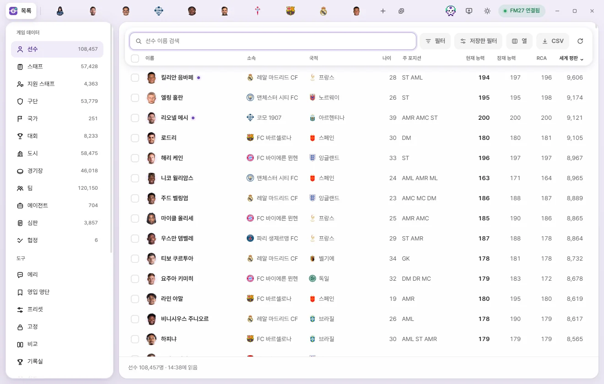
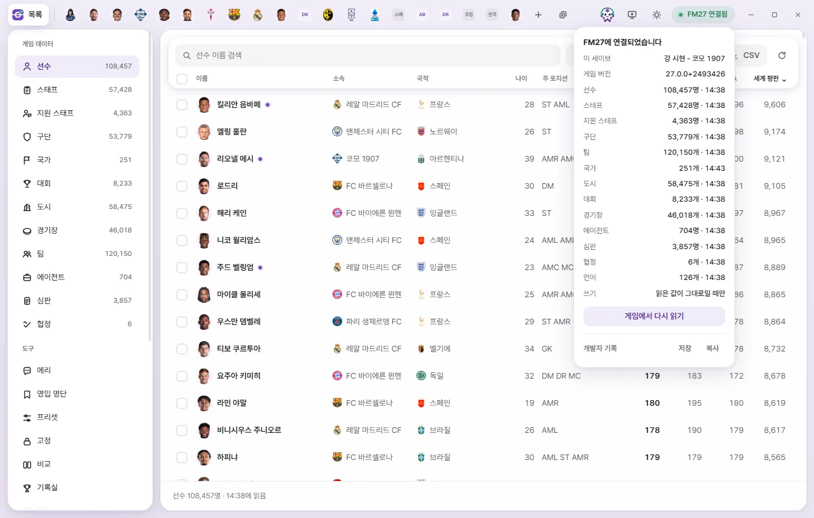
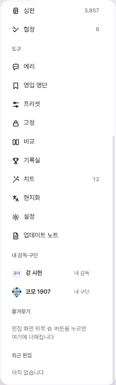
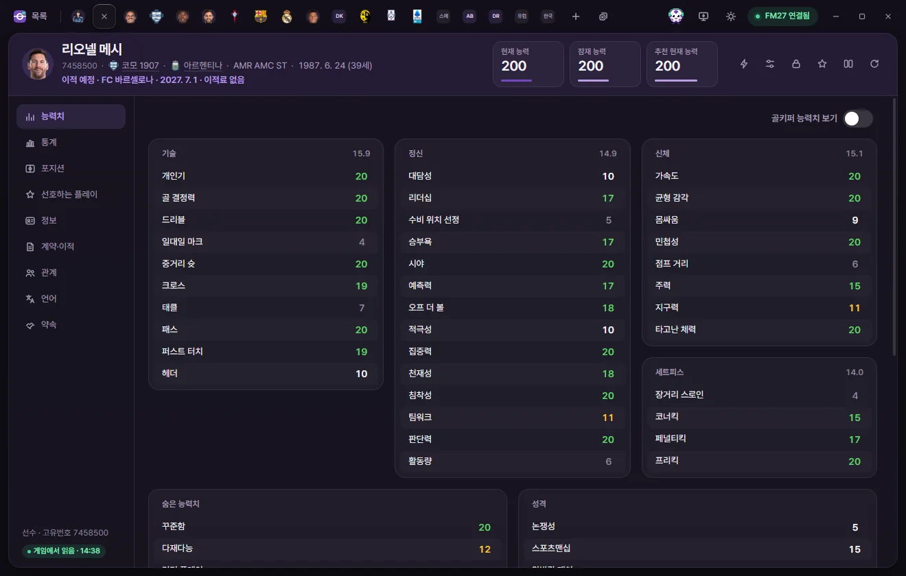
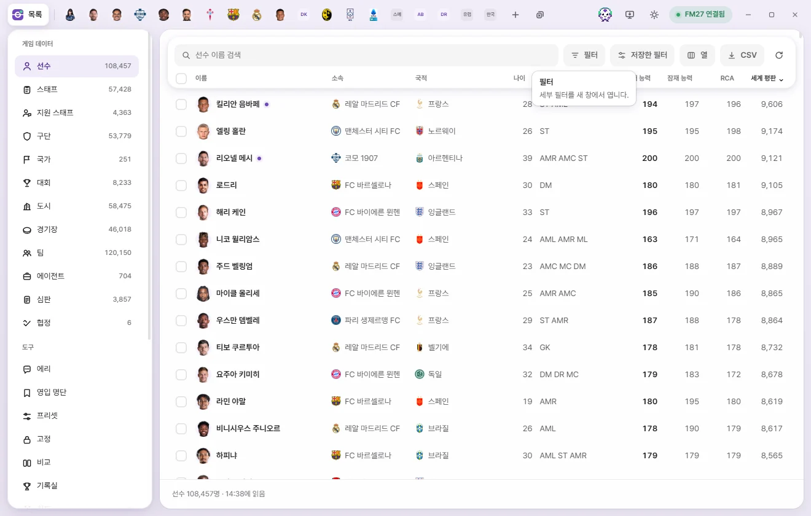

Basics
Screen overview
A tour of the FMAX window—the top tab bar, left sidebar, lists, edit tabs, and bottom status bar.


The FMAX window is split into four parts:
- Top tab bar: The "List" button, your open edit tabs, and controls like Save and Connection status.
- Left sidebar: Categories to browse (Player, Club, and more) and tools (Live tweaks, Locks, and more). Shown only when viewing lists or tools.
- Main area: Displays the list or tool chosen in the sidebar, or the active edit tab.
- Bottom bar: Shows item counts, selections, and pending unsaved edits.
Top tab bar
From left to right:
| Button | What it does |
|---|---|
| List (FMAX logo) | Returns to the list view while keeping your open tabs intact. |
| Open tabs | Each player, club, or other item opens in its own tab. Click to switch tabs or drag to reorder them. When many tabs are open, they narrow down to show just faces or logos. See Tabs and quick open. |
| + (Open in a tab) | Search by name to open a new tab. Same as Ctrl+K. |
| Close all tabs | Appears next to + when two or more tabs are open. Closes all tabs and returns to the list view. Ctrl+Shift+W |
| Save (number) | Appears only when you have unsaved edits. The number shows the total count of edited fields across all open tabs. Click to write every tab's changes to the game at once. Ctrl+S (When changes are written to the game) |
| Locks (number) | Appears when any values are locked—for example, "Locks 3", or "Locks 3 · Stopped" when paused. Click to open the Locks screen. |
| Eri (face icon) | Opens or closes the chat panel for AI analyst Eri. Ctrl+J |
| Open viewed screen (monitor) | Opens whichever player, staff member, club, or team you're currently viewing in FM as a tab in FMAX, without changing any game data. Ctrl+G |
| Theme (moon / sun) | Switches between dark mode and light mode. |
| Connection indicator | Shows the live connection state with FM. Click to open the Connection status popup (see below). |
| Minimize · Maximize · Close | Standard window controls. Drag an empty spot on the tab bar to move the window, or double-click it to maximize. |
If you click Open viewed screen while viewing a screen FMAX can't open directly—such as a competition, nation, or match screen—FMAX lets you know. Open a player, staff, club, or team screen in FM first and try again.
Connection indicator
FMAX checks for FM every 5 seconds and updates the connection indicator accordingly.
| Status | Meaning |
|---|---|
| FM27 connected | Connected to the game and ready to read and write values. |
| Reading (%) | Reading the save for the first time. Once finished, lists and tabs open without waiting. |
| Waiting for save | FM is running, but no save is loaded yet. FMAX reads it automatically once you load one. |
| FM27 starting | FM is launching. FMAX connects automatically once the game reaches the main menu. |
| FM27 closed | FM isn't running. Launch the game and load a save to connect automatically. |
| Version mismatch | Your game version isn't supported by this version of FMAX. A notice also appears at the bottom of the sidebar. |
| No access | If FM was launched as administrator, run FMAX as administrator too. |
| Error | Something went wrong while reading the game. Wait a moment and try again. |
| Checking | FMAX just started and is looking for the game. |


The Connection status popup shows:
- Current save: The name FMAX detected for the loaded save. A brand-new game that hasn't been saved yet appears as "Unsaved new game" (What each save remembers separately).
- Game version: The FM version FMAX is reading.
- Item counts and last-read times for each category (for example, "Player 108,457 · 14:38").
- Writing: "Only if read values haven’t changed" means FMAX writes an edit only if the game's current value still matches what FMAX originally read (When changes are written to the game).
- Reload from game button (or "Check again" when disconnected): Re-reads all lists and open tabs from the game.
- Save / Copy Developer log: Saves or copies a diagnostic log (Save log / Copy log) to your Downloads folder or clipboard to send to the developer if loading fails.
Theme
Click the theme button to toggle between dark mode and light mode. FMAX follows your Windows theme at first, then remembers your choice across restarts. Separate windows like the filter window follow the same theme. You can toggle the translucent "glass effect" for bars and panels in Settings.
Left sidebar


Game data
Lists for Player, Staff, Support staff, Club, Nation, Competition, City, Stadium, Team, Agent, Referee, and Agreement. The number next to each name is the count read from the game. Click any category to open its list on the right (Using lists).
Languages aren't listed in the sidebar—press Ctrl+K and search for a language by name to open it in a tab.
Tools
| Tool | What it does |
|---|---|
| Eri | Ask the AI analyst questions and get scouting suggestions and action cards. Eri |
| Shortlist | Group players and staff into named lists and exchange .fmf shortlist files with FM. Shortlist |
| Presets | Create and manage reusable bundles that edit multiple fields at once. Presets |
| Locks | Keep chosen values pinned even when the game tries to change them. The number shows how many values are locked. Locks |
| Compare | View two open tabs of the same type side by side. Compare |
| Record room | Browse Season stats and historical records. Stats, player cards & Record room |
| Live tweaks | Ongoing enhancements that stay active while switched on. Shows the count of active tweaks when enabled. Live tweaks |
| Korean names | Gives regens Korean names (shown only when FMAX is in Korean). Korean names |
| Settings | Configure FMAX settings. Settings and Update notes |
| Update notes | See what changed in each release. Settings and Update notes |
My manager & club
Shown whenever the save has a human-controlled manager. Click "My manager" to open your manager's tab, or "My club" to open their club's tab. If your manager is out of work, "Unemployed" appears and the club row is hidden.
In saves with multiple human managers (such as online games), each one is listed as a "Human manager" with Choose my manager (or Change my manager once chosen) at the bottom. Your chosen manager is used for "to My club" actions in ⚡ Game editor and for "My manager options" in Live tweaks.
Favourites
Items you starred from an edit tab's header or the right-click menu. Click an item to open its tab, or click × on the right to remove it. Favourites are remembered separately for each save (Tabs and quick open).
Recent edits
Shows up to 6 recent changes written to the game during this FMAX session, newest first (for example, "Lionel Messi Crossing 19 → 20"). Click an entry to open that item's tab. This list clears when you load a different save or close FMAX.
Main area: lists and tools
Pick a category under Game data to see its list, or pick a tool to open its screen. Above every list you'll find the search box, Filter, Saved filters, Columns, CSV, Reload, and Help (?) buttons—see Using lists for details.
The "?" (Help) button and F1 open the wiki page for the current screen in your browser. You'll find it above lists, in edit tab headers, and at the top of tool screens. Settings and Update notes also include a "User wiki" button that opens the wiki home page.
When you close and reopen FMAX, your last viewed sidebar screen and open tabs come right back.
Edit tabs


Header
- Face or logo and name. Shows a Face or logo when a graphics pack is installed, or initials otherwise. Club headers use the club's colours, and Women’s clubs and their teams display their names in a distinct colour.
- Line below the name. Starts with the Unique ID—click it to Copy. Regens have an
r-prefix (such asr-12345). Next come Club, Nationality, Primary position, "Loan · parent club" if out on loan, and date of birth (age). Click any underlined name to open its tab. - Upcoming transfers appear as "Future transfer · Club · date · Transfer fee", and planned retirements appear as "Set to retire · date".
- Stat cards. Players show Current Ability (CA), Potential Ability (PA), and Recommended Current Ability (RCA). Click any editable card to type a new number; press Enter or click outside to confirm, or press Esc to cancel. Changes aren't written to the game until you click "Save".
- Whenever Recommended Current Ability differs from Current ability, a Set CA to this button appears on the card. Click it to match CA to RCA (requires Save to take effect).
- Turning on "Show Attribute effectiveness on player screens" in Settings adds an Attribute effectiveness card here too.
Header buttons
| Button | What it does |
|---|---|
| ⚡ In-game editor actions | Opens quick actions such as transfers, loans, injuries, and contracts. Available on Player, Staff, Team, Club, and My manager tabs. Changes apply to the game immediately upon confirmation. Game editor |
| Apply preset | Fills this tab with values from a chosen preset. Review the changes and click "Save" to write them to the game. Presets |
| Locks | Locks the fields selected on the Locks screen at their current values, or clicks again to unlock. Locks |
| Favourite (star) | Adds or removes this item from Favourites in the sidebar. |
| Compare | Compares this tab side by side with another open tab of the same type. Compare |
| Reload from game | Re-reads just this item from the game. Any unsaved edits are kept and compared against the newly read values. |
| ? Help | Opens the wiki page for this tab type. F1 |
Left sub-pages
Each tab is organised into sub-pages on the left—such as Attributes, Positions, Overview, and Contract & transfer. Click a sub-page or use ↑ and ↓ to switch. For full details on every field, see the individual edit tab guides such as Player and Club.
At the bottom left, you'll see the item type and ID (such as "Player · ID 7458500") along with its read status:
| Status | Meaning |
|---|---|
| Read from game · 14:38 | Values were read from the game at that time. |
| Last read values · 14:38 | Disconnected from the game or the save changed, so live game values may differ. Editing and saving are disabled until you reload. |
| Reading | Currently reading from the game. |
| Couldn’t read | Couldn't find or read this item in the game. The reason and a "Reload" button appear in the main area. |
Bottom bar
- Below a list: Shows the total count and last-read time, such as "Player 108,457 · Read at 14:38". Filtering shows "120 of 108,457", and selecting rows adds "· 3 selected" with batch buttons on the right (Using lists).
- Below an edit tab: Editing fields brings up a bar like "2 changed · Crossing 19→20, …" with "Revert" and "Save" buttons (When changes are written to the game).
- In the squad and staff tables of a Club tab: Selecting multiple people brings up a selection bar at the bottom (Tabs and quick open).
Brief toast notifications appear at the bottom centre when an action finishes or something goes wrong. Notifications with action buttons—such as "Reopen", "Revert", or "Show in folder"—stay visible a little longer.
Tooltips
Hover over any button or field for a quarter of a second to see its name and description. Tooltips also show keyboard shortcuts as key caps, along with a coloured note telling you whether a button "Writes to game" immediately or requires you to "Click Save to apply to the game". Hover over the ⓘ icon next to a field label for details about that field.


Startup screen
When FMAX launches, it steps through "Preparing FMAX → Finding game → Reading game" beneath the logo. If you don't want to wait, click Continue without waiting—reading continues in the background and progress appears on the connection indicator. If something goes wrong, Try again, Save log, Copy log, and Continue anyway buttons appear. See Troubleshooting if you run into trouble.